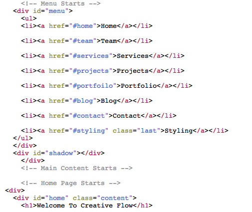
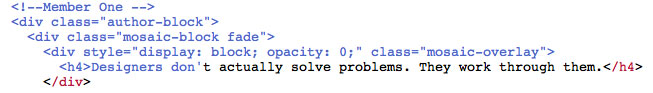
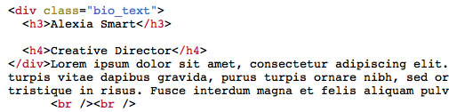

Created: 16/9/2011
By: Jo Phillips
Website: spiralpixel.com
Thank you for purchasing my theme. If you have any questions that are beyond the scope of this help file, please feel free to email via my user page contact form here. Thanks so much!
Navigation

The menu is set using id tags each should be unique and link to each section in the content.
You can change the speed and style of scrolling in the file style > js> scripts.js. Scroll down until you see - Navigation and along the code until you see: animationTime:1300,easing:["easeInOutBack"]}; Lowering the time speeds up the scrolling, and easing is the style in which the page scrolls. More effects can be found here - http://gsgd.co.uk/sandbox/jquery/easing/
You can also link to any section of the site using the class "visualNav" in your link along with the id of the section that you want to scroll to.
e.g <a href="#team" class="visualNav">fascinating</a> kind of art.
Home Slider
The sections are controlled by a slider called Awkward (link below).
Pictures sizes are: 830px x 470px. You can add images, video and your own html to this slider.
The Team Section
The team pictures are 250px 220px in size. The text in the overlay effect is added into the h4 tag.

Each team member's information is added into the div - bio_text.

Services Section
The small carousel pictures are 75px 75px in size.
Projects
1: Carousel Content slider - Picture Sizes: 450px x 230px
2: Vertical Scroll Gallery - Picture Sizes: 240px x 180px
Portfolio
1: Thumbnails - The thumbnails are 269px x 160px in size and are stored in folder, style >images > work. They open using PrettyPhoto. More information on this can be found in the php section below.
2: The sortable galley is controlled using a list - (portfolio-filter). Add your categories into the list and name them. e.g web, icons, art....
2: Add your pictures and in the li class, name the category that you want the picture to be in. To get the images to sort, mix up your classes. You can see how to do this by following my code.
Contact Section
Contact Form:
2: To get the contact form to forward to your email address.
a) In a text editor of your choice, open send.php
At the top of the page, you will see the following code:
$email_to = "ADD YOUR EMAIL ADDRESS HERE";
b) Simply add your email address within the quote marks where it says - Add Your Email Address
c) You may also want to change the thank you message. You can do this by opening style > js > scripts.js
Find the commented section - 'Form Validation Script' which is right at the bottom of the code.
You will see: <p class="success">Thanks!<br/>Your email was sent successfully.<br/>We will contact you as soon as possible.</p>
Change this to your thank you message.
Google Map:
Simply add your address at the foot of index.html.
Css Buttons
The coloured buttons can be used as follows:
Green Button: <a href="#" class="green button">button
Blue Button: <a href="#" class="blue button">button
Pink Button: <a href="#" class="pink button">button
Red Button: <a href="#" class="red button">button
Orange Button: <a href="#" class="orange button">button
Yellow Button: <a href="#" class="yellow button">button
White Button: <a href="#" class="white button">button
Grey Button: <a href="#" class="grey button">button
I'm using one CSS file for this theme. - main.css.
body {
background: #333;
font: 12px/1.8em "Century Gothic", Arial, Helvetica, sans-serif; color: #bbb;
background-image: url(style/images/bg/linen.png); background-repeat: repeat;
}
/* Wrapper - Menu and Content */
#wrapper{
width:870px;
margin: 0px auto 0px auto;
}
/* Content Container */
.content {
width: 870px;
background: transparent;
margin: 0px 0px 50px auto; padding: 180px 0px 0px 0px;
min-height: 500px;
}
1: body: You can change the background pattern here. A selection of backgrounds, can be found in the folder, images > bg.
/* Menu Styling */
#header{
border-bottom: 3px double #777;
position: fixed; top: 0px; padding:0 0;
background-image: url(style/images/bg/linen.png); background-repeat: repeat;
background-position: 15px 0px; width: 960px; height: 165px; text-align: center;
z-index: 2000; margin-left: -45px;
}
.logo {margin:0px 0px 17px 0px;}
#menu ul{ margin: 0; padding: 0; position: relative; }
#menu ul li{ list-style:none; display:inline; font: 12px/1.8em "Century Gothic", Arial, Helvetica, sans-serif; }
#menu a{ text-shadow: 0px 1px 0px #222; border-right:1px dotted #666; padding: 2px 9px;
text-align:center; text-transform:uppercase; }
#menu .last { border-right:0px; }
#menu ul li a:hover{ color: #bbb; text-decoration:none; }
#shadow {
background-color: transparent;
height: 5px;
width: 940px;
margin: 10px auto;
position: relative;
text-align: center;
box-shadow-bottom: 0px 10px 10px #111;
-moz-box-shadow: 0px 10px 10px #111;
-webkit-box-shadow: 0px 10px 10px #111;
}
1: Header - The container for your logo and menu.
Skins
I have designed ten skins for you to choose from. They can be found in the folder extras > css.
If you want to select another theme style, simply move it into your main folder and rename it > main.css.
Also, if you would like to add one of the backgrounds to your own design, add it to both the body and menu header (commented for you in the css).
Font replacement
This theme uses LeagueGothicRegular for the main iheadings and OldStandardTTItalic for the italic intro text.
Extras
I have included some psd elements in extras > psd folder, these are choices for the logo ribbon including a .pat file, icons for services and social networks. Icons can be found images > icons. The social network icons images > 32social
c) Extra backgrounds can be found in images > bg.
This theme uses javascript and php.
I've used the following images, icons or other files as listed.
Once again, thank you so much for purchasing this theme. As I said at the beginning, I'd be glad to help you if you have any questions relating to this theme. No guarantees, but I'll do my best to assist. If you have a more general question relating to the themes on ThemeForest, you might consider visiting the forums and asking your question in the "Item Discussion" section.
Jo Phillips